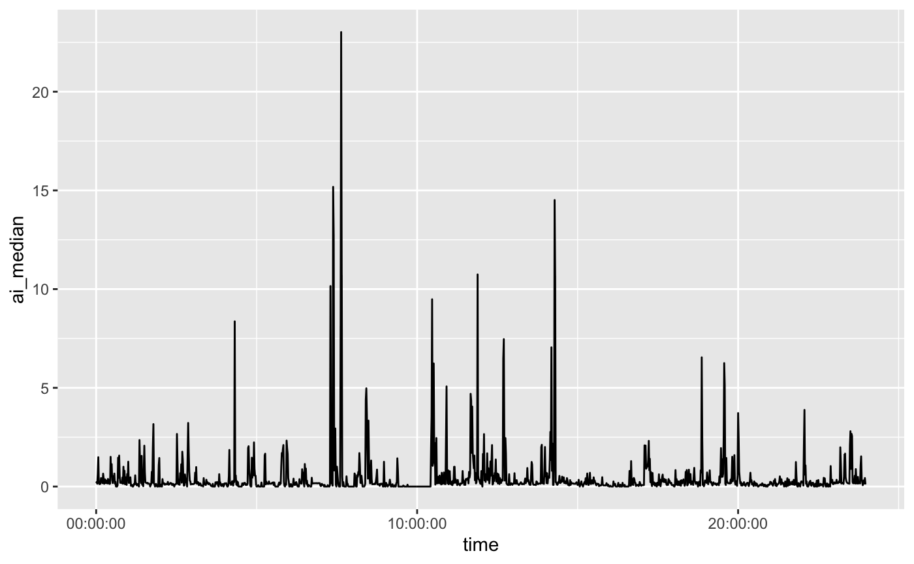

library(SummarizedActigraphy)
The data is from https://github.com/THLfi/read.gt3x/files/3522749/GT3X%2B.01.day.gt3x.zip. It is a daily GT3X file from an ActiGraph.
Let’s download the data:
url = "https://github.com/THLfi/read.gt3x/files/3522749/GT3X%2B.01.day.gt3x.zip" destfile = tempfile(fileext = ".zip") dl = utils::download.file(url, destfile = destfile) gt3x_file = utils::unzip(destfile, exdir = tempdir()) gt3x_file = gt3x_file[!grepl("__MACOSX", gt3x_file)] path = gt3x_file
This data represents sub-second level accelerations in the X, Y, and Z directions. Additional information from devices can be measured, such as temperature or light. We will focus only on the accelerometry data. The GGIR::g.calibrate function is a method to calibrate the ENMO values [@GGIR_calibrate]. Other types of activity data, would be things such as activity counts, step counts, or previously summarized data. Data such as this is commonly calculated using proprietary methods or algorithms.
We will use the read_actigraphy function to read these files into an AccData object:
x = read_actigraphy(path) Input is a .gt3x file, unzipping to a temporary location first... Unzipping gt3x data to /var/folders/1s/wrtqcpxn685_zk570bnx9_rr0000gr/T//RtmpupxD4y 1/1 Unzipping /var/folders/1s/wrtqcpxn685_zk570bnx9_rr0000gr/T//RtmpupxD4y/GT3X+ (01 day).gt3x === info.txt, activity.bin, lux.bin extracted to /var/folders/1s/wrtqcpxn685_zk570bnx9_rr0000gr/T//RtmpupxD4y/GT3X+(01day) GT3X information $ Serial Number :"NEO1DXXXXXXXX" $ Device Type :"GT3XPlus" $ Firmware :"2.5.0" $ Battery Voltage :"4.22" $ Sample Rate :30 $ Start Date : POSIXct, format: "2012-06-27 10:54:00" $ Stop Date : POSIXct, format: "2012-06-28 11:54:00" $ Download Date : POSIXct, format: "2012-06-28 16:25:52" $ Board Revision :"4" $ Unexpected Resets :"0" $ Sex :"Male" $ Height :"172.72" $ Mass :"69.8532249799612" $ Age :"43" $ Race :"White / Caucasian" $ Limb :"Ankle" $ Side :"Left" $ Dominance :"Non-Dominant" $ DateOfBirth :"621132192000000000" $ Subject Name :"GT3XPlus" $ Serial Prefix :"NEO" $ Last Sample Time : 'POSIXct' num(0) - attr(*, "tzone")= chr "GMT" $ Acceleration Scale:341 Parsing GT3X data via CPP.. expected sample size: 2700000 Using NHANES-GT3X format - older format Sample size: 2700000 Scaling... Done (in 0.596177101135254 seconds) class(x) [1] "AccData" names(x) [1] "data" "freq" "filename" "header" "missingness"
The read_actigraphy function uses the read.gt3x::read.gt3x for gt3x files, and uses functions from the GGIR package [@GGIR].
The output has a data matrix in the data, which has X, Y, and Z columns, with an additional time column, which is a date/time column. Additionally, the header object has additional metadata about the object:
x$header # A tibble: 23 x 2 Field Value <chr> <chr> 1 Serial Number NEO1DXXXXXXXX 2 Device Type GT3XPlus 3 Firmware 2.5.0 4 Battery Voltage 4.22 5 Sample Rate 30 6 Start Date 2012-06-27 10:54:00 7 Stop Date 2012-06-28 11:54:00 8 Download Date 2012-06-28 16:25:52 9 Board Revision 4 10 Unexpected Resets 0 # … with 13 more rows
The sampling frequency is embedded in the header, but also found in the freq element:
x$freq [1] 30
In this case, there are 30 samples per second.
The summarize_daily_actigraphy summarizes an AccData into second-level data for each day. The output is an tsibble:
daily = summarize_daily_actigraphy(x) Fixing Zeros with fix_zeros Calculating ai0 Calculating MAD Joining AI and MAD Joining, by = "HEADER_TIME_STAMP" head(daily) # A tsibble: 6 x 6 [1m] <GMT> time AI SD MAD MEDAD mean_r <dttm> <dbl> <dbl> <dbl> <dbl> <dbl> 1 2012-06-27 10:54:00 4.93 0.454 0.390 0.278 0.747 2 2012-06-27 10:55:00 9.48 0.259 0.133 0.0492 1.06 3 2012-06-27 10:56:00 1.17 0.0766 0.0149 0.00330 1.02 4 2012-06-27 10:57:00 0.171 0.00264 0.00218 0.00188 1.01 5 2012-06-27 10:58:00 1.50 0.0728 0.0203 0.00618 1.02 6 2012-06-27 10:59:00 0.107 0.00277 0.00220 0.00178 1.01
The process is as follows, we use floor_date from lubridate, so that each time is rounded to 1 seconds. This rounding is what allows us to use group_by on the time variable (which is really date/time variable) and summarize the data:
library(dplyr)
Attaching package: 'dplyr'
The following objects are masked from 'package:stats':
filter, lag
The following objects are masked from 'package:base':
intersect, setdiff, setequal, union
data = x$data
data = data %>%
mutate(time = lubridate::floor_date(time, unit = "1 seconds"),
enmo = sqrt(X^2 + Y^2 + Z^2) - 1)
head(data)
Sampling Rate: 30Hz
Firmware Version: 2.5.0
Serial Number Prefix: NEO
X Y Z time enmo
1 0 0 0 2012-06-27 10:54:00 -1
2 0 0 0 2012-06-27 10:54:00 -1
3 0 0 0 2012-06-27 10:54:00 -1
4 0 0 0 2012-06-27 10:54:00 -1
5 0 0 0 2012-06-27 10:54:00 -1
6 0 0 0 2012-06-27 10:54:00 -1In summarize_daily_actigraphy, the following process is done:
data = data %>%
group_by(time) %>%
summarize(
mad = (mad(X, na.rm = TRUE) +
mad(Y, na.rm = TRUE) +
mad(Z, na.rm = TRUE))/3,
ai = sqrt((var(X, na.rm = TRUE) +
var(Y, na.rm = TRUE) +
var(Z, na.rm = TRUE))/3),
n_values = sum(!is.na(enmo)),
enmo = mean(enmo, na.rm = TRUE)
)
`summarise()` ungrouping output (override with `.groups` argument)
head(data)
# A tibble: 6 x 5
time mad ai n_values enmo
<dttm> <dbl> <dbl> <int> <dbl>
1 2012-06-27 10:54:00 0 0 9 -1
2 2012-06-27 10:54:01 0 0 9 -1
3 2012-06-27 10:54:02 0 0 9 -1
4 2012-06-27 10:54:03 0 0 9 -1
5 2012-06-27 10:54:04 0 0 9 -1
6 2012-06-27 10:54:05 0 0 9 -1This assumes that all non-NA values are valid, no wear-time estimation is done. Also, estimating non-wear time/areas from this summarized data. The accelerometry::weartime function estimates wear time, but is based on count values.
This daily-level data is good for thresholding activity, such as into categories like vigorous activity. Also, this data is used for estimating sedentary and active bouts, and transition probability between them.
One of the statistics calculated are ENMO, the Euclidean Norm Minus One, which is:
\[
ENMO_{t} = \frac{1}{n_{t}} \sum_{i=1}^{n_t} \left(\sqrt{X_{i}^2 + Y_{i}^2 + Z_{i}^2} - 1\right)
\] where \(t\) is the time point, rounded to one second. In this case, \(i\) represents each sample, so there are 30 ENMO measures per second, which means the number of samples for that time point, \(n_{t}\), is 30. In most cases, however, ENMO and the other statstics are calculated at the 1-second level. So the \(ENMO_{t}\) from summarize_daily_actigraphy calculates \(ENMO\) for each sample, then takes the mean \(ENMO_{t}\) for 1-second intervals. We will use \(ENMO_{t}\) to represent this second-level data, leaving off any bar or hat, but in truth it is an average. The subtraction of \(1\) is to subtract \(1\) gravity unit (g), from the data so it represents acceleration not due to gravity.
The Activity Index (AI) was introduced by @bai. It is calculated by: \[ AI_{t} = \sqrt{\frac{Var(X_{t}) + Var(Y_{t}) + Var(Z_{t})}{3}} \]
where
\[ Var(X_{t}) = \frac{1}{n_{t}} \sum_{i=1}^{n_t} \left(X_{i} - \bar{X_{t}}\right)^2 \]
where \(\bar{X_{t} = \frac{1}{n_{t}} \sum_{i=1}^{n_t} X_{i}\).
The Median Absolute Deviation (MAD) was introduced by XX. It is calculated by:
\[ MAD_{t} = \frac{MAD(X_{t}) + MAD(Y_{t}) + MAD(Z_{t})}{3} \]
where
\[ MAD(X_{t}) = \text{median}_{t} \left|X_{i} - \text{median}(X_{t})\right| \] where \(\text{median}_{t}\) is the median over all values \(i = 1, \dots, n_{t}\), and \(\text{median}(X_{t}) = \text{median}_{t} (X_{i})\).
The summarize_actigraphy summarizes an AccData into second-level data for an “average” day or average profile. For each second of the day, a summary statistic is taken, either the mean or the median. The summarize_actigraphy gives both, and the output is an tsibble:
average_day = summarize_actigraphy(x, .fns = list(mean = mean, median = median),) Running Daily Actigraphy Joining, by = "HEADER_TIME_STAMP" Getting the First Day Summarizing Data head(average_day) # A tsibble: 6 x 11 [1m] time AI_mean AI_median SD_mean SD_median MAD_mean MAD_median MEDAD_mean <time> <dbl> <dbl> <dbl> <dbl> <dbl> <dbl> <dbl> 1 00'00" 0.266 0.177 0.00646 0.00507 0.00373 0.00317 0.00221 2 01'00" 0.323 0.230 0.0150 0.00644 0.00578 0.00448 0.00271 3 02'00" 0.144 0.142 0.00402 0.00447 0.00252 0.00276 0.00132 4 03'00" 0.947 0.643 0.0310 0.0145 0.0108 0.00640 0.00516 5 04'00" 1.11 1.48 0.0324 0.0224 0.0130 0.0120 0.00428 6 05'00" 0.536 0.214 0.00836 0.00615 0.00498 0.00294 0.00274 # … with 3 more variables: MEDAD_median <dbl>, mean_r_mean <dbl>, # mean_r_median <dbl>
The number of rows is 86400, which is 60 seconds per minute, 60 minutes per hour, 24 hours per day:
nrow(average_day) [1] 1440 range(average_day$time) Time differences in secs [1] 0 86340
These values represent an “average” day, where average is determined by mean and median.
Here we plot the AI values for each minute, summarized over mean and median:
if (requireNamespace("ggplot2", quietly = TRUE)) { library(ggplot2) library(magrittr) average_day %>% dplyr::rename_with(tolower) %>% ggplot(aes(x = time, y = ai_mean)) + geom_line() average_day %>% dplyr::rename_with(tolower) %>% ggplot(aes(x = time, y = ai_median)) + geom_line() }
